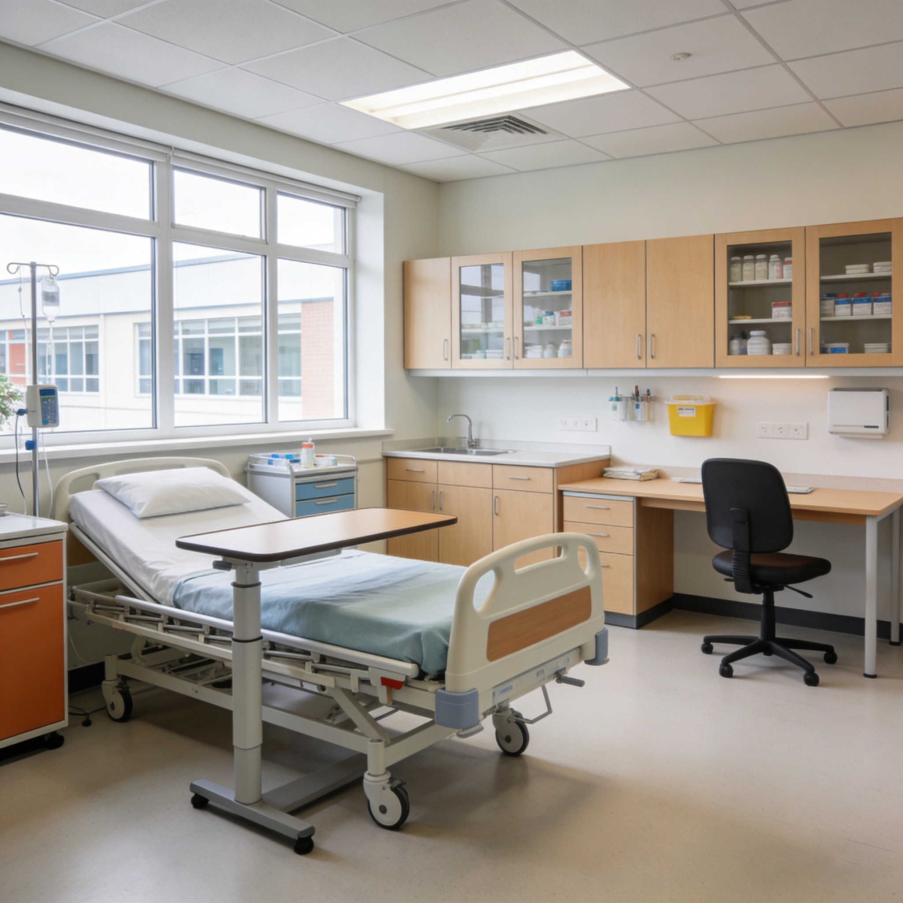
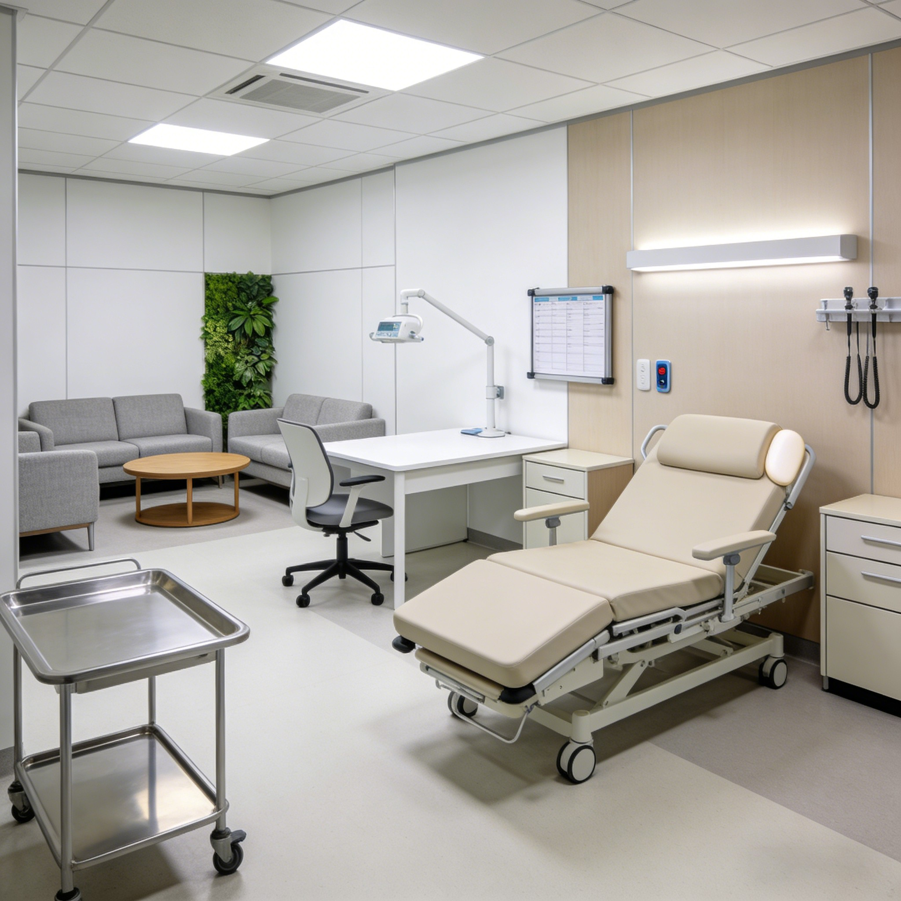
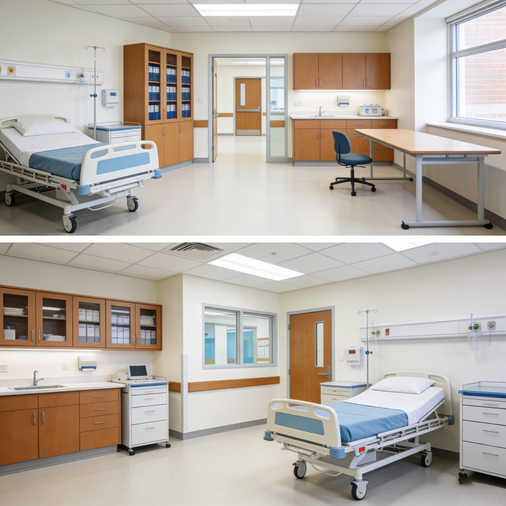

Esta mesa de cama regulable permite a una persona encamada comer, leer, escribir o usar el ordenador con total autonomía. La altura se ajusta con una palanca, la superficie se inclina para leer cómodamente, y las ruedas permiten acercar o apartar la mesa sin esfuerzo. El diseño es compacto y funcional, pensado para el uso diario en casa.
El ajuste de altura mediante palanca de gas permite elevar o bajar la mesa con una sola mano, desde 65 hasta 110 cm. La persona en la cama puede ajustar la altura sin ayuda de nadie, encontrando la posición perfecta para comer, leer o trabajar.
La superficie se inclina de 0 a 45 grados para leer un libro o ver una tableta sin tener que sujetarla con las manos. La inclinación se ajusta con una palanca lateral y se bloquea automáticamente en la posición deseada.
Las cuatro ruedas con freno permiten desplazar la mesa para colocarla sobre la cama o apartarla cuando no se necesita. Las ruedas son silenciosas y no rayan el suelo de madera, cerámica o vinilo de la habitación.
El borde elevado de la superficie evita que los objetos se deslicen al inclinar la mesa. Un vaso de agua, un libro o una tableta se mantienen en su sitio sin riesgo de caer al suelo, incluso con la mesa inclinada.
La base en H se desliza bajo la cama sin chocar con los pies del paciente. El diseño compacto de la base permite guardar la mesa debajo de la cama cuando no se usa, liberando espacio en la habitación.
| Modelo | Superficie | Altura | Uso |
|---|---|---|---|
| Estándar | 80 × 40 cm | 65-110 cm | Comer y leer |
| Con inclinación | 80 × 40 cm + 0-45° | 65-110 cm | Lectura y tablet |
| Grande | 90 × 45 cm | 60-115 cm | Ordenador y trabajo |
| Compacto | 60 × 35 cm | 60-100 cm | Espacios pequeños |
| Superficie | Laminado de fácil limpieza 80 × 40 cm, borde elevado |
| Altura | 65-110 cm ajustable con palanca de gas |
| Inclinación | 0-45° con palanca lateral y bloqueo |
| Base | Acero en H, 60 × 40 cm, ruedas 75 mm |
| Ruedas | 4 ruedas silenciosas, 2 con freno |
| Carga máx. | 20 kg sobre la superficie |
| Acabado | Blanco, gris o madera (personalizable) |
| Certificaciones | CE |
| Garantía | 3 años columna de gas, 5 años estructura |
Comer en la cama: mesa regulable para comer con comodidad, con altura ajustable y borde que evita derrames. Se aparta con las ruedas cuando se termina.
Lectura y descanso: mesa con inclinación para leer libros o ver una tableta recostado en la cama, sin sujetar el dispositivo con las manos.
Teletrabajo desde la cama: mesa amplia para ordenador portátil y documentos, con altura e inclinación ajustables para trabajar con postura ergonómica durante la recuperación.
Sí, la columna de gas mantiene la altura de forma estable y la base en H de 60 × 40 cm proporciona gran estabilidad. La mesa no se tambalea al escribir o comer sobre ella, incluso con las ruedas frenadas.
Sí, la mesa tiene 40 cm de fondo y pasa por puertas estándar de 70 cm sin problema. Las ruedas permiten desplazarla entre habitaciones si el paciente cambia de dormitorio durante la recuperación.
Sí, la palanca lateral de inclinación se acciona con una mano mientras se ajusta el ángulo de la superficie con la otra. El mecanismo de bloqueo mantiene la inclinación de forma segura sin necesidad de apretar tornillos.
Este producto también está disponible en versión profesional para hospitales: Ver versión hospitalaria →
Reciba información detallada de todos nuestros productos de mobiliario médico.
📋 Solicitar catálogo